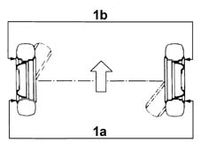
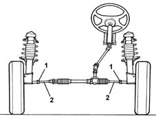
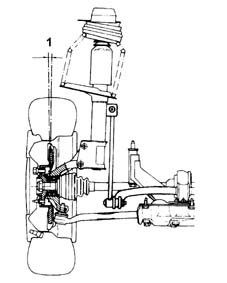
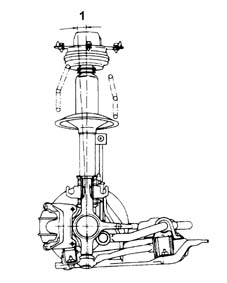

4450A10 front wheel geometry - check using optical equipment - includes front wheel tow-in adjustment if necessary
- Path
- Procedures > 44 SUSPENSION AND WHEELS > 4450 WHEELS AND HUBS > 4450A wheel geometry > 4450A10 front wheel geometry - check using optical equipment - includes front wheel tow-in adjustment if necessary
- Kind
- repair procedure (removal / refitting; the operation number is the code)
- Applies to
- all engines; all production periods
- Interactive page
- https://sloeber94.github.io/elrnDB-fMltpl/en/#/2891735
Applies to: all engines; all production periods
The front wheel geometry should be checked after having subjected the components which affect the wheel geometry to the following checks:
- tyre inflation pressure;
- the eccentricity and orthogonality of the wheel rims should not exceed 3 m;
- wheel bearings end float;
- clearance between steering knuckle and track control arm ball joint;
- steering rod ball joint clearance;
Toe in check:
- Carry out the preliminary checks on the vehicle and remove any loads transported.
- Position the vehicle (in running order) on a lift with test equipment.
1. Check that the toe in (1a-1b) is within the recommended limits.
 | Measurement | Value | |
|---|---|---|---|
1 | Toe-in (mm) | -2 ÷ -4 |

Applies to: all engines; all production periods
Toe in adjustment:
- Straighten the steering wheel and lock it in position using a suitable tool.
- Loosen the bands securing the boots to the rods.
1. Loosen the nuts securing the adjustable steering rods.
2. Tighten or loosen the steering box rods until the toe in value is correct, keeping the front wheels aligned.
| Measurement | Value | |
|---|---|---|---|
- | Toe-in (mm) | -2 ÷ -4 |

Applies to: all engines; all production periods
Tighten the nuts securing the adjustable steering rods to torque.
 | Fastening | Component | Ø | Value (daNm) |
|---|---|---|---|---|
- | Nut | ADJUSTABLE STEERING LINKS | M14 x 1.5 | 5 |
Tighten the bands for the boots on the steering rods.
Remove the steering lock.
Remove the vehicle from the lift with the test equipment.
Caster check:
- Carry out the preliminary checks on the vehicle and remove any loads transported.
- Position the vehicle (in running order) on a lift with test equipment.
1. Check that the front wheel caster is within the recommended limits.
| Measurement | Value | |
|---|---|---|---|
1 | Caster (Gradi) | 3° 40' +\- 30' |

Applies to: all engines; all production periods
Camaber check:
- Carry out the preliminary checks on the vehicle and remove any loads transported.
- Position the vehicle (in running order) on a lift with test equipment.
1. Check that the front wheel camber is within the recommended limits.
| Measurement | Value | |
|---|---|---|---|
1 | Camber (Gradi) | 0°20' ± 30' |
